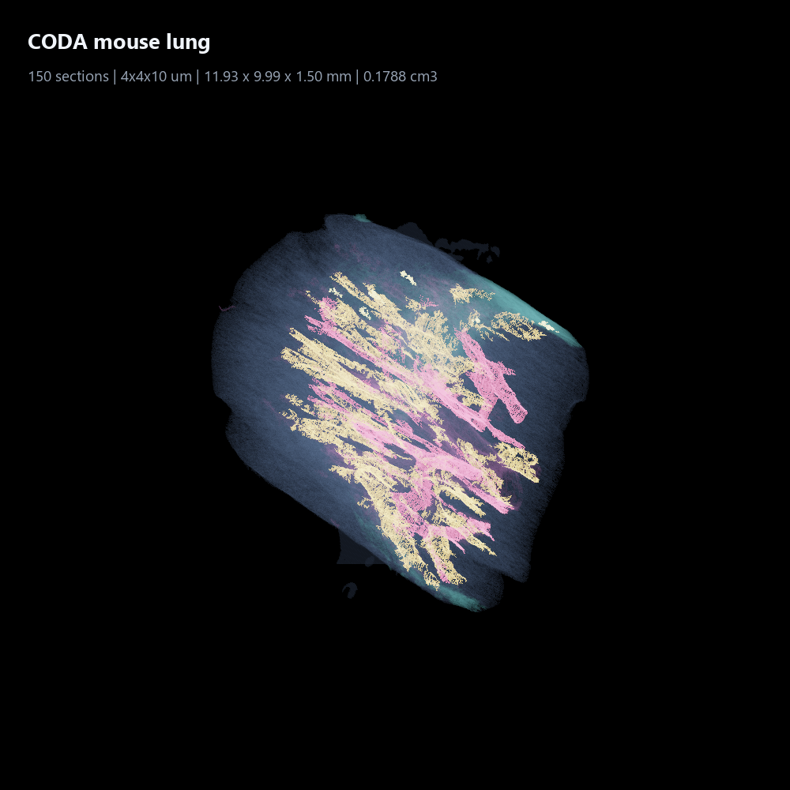
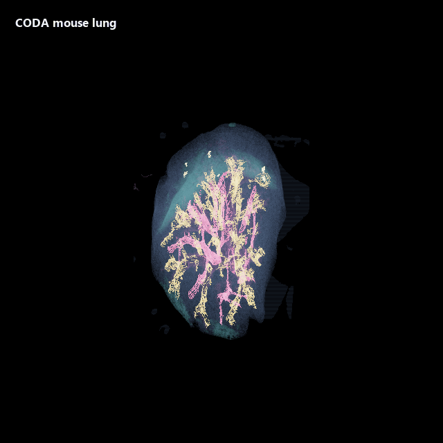

五个阶段，按顺序在 GPU 服务器上跑完
参数完全沿用教程自带的那一套。第 4 节在标注集上训练，4.5 把那个模型应用到每一张 切片，第 5、6 节把结果变换到统一坐标系并堆叠成体数据。
-
第 3 节组织掩膜 + 配准
组织分割与逐对对齐
每张切片得到一张组织掩膜，然后在每一对相邻切片之间做一次全局仿射加一次弹性 形变，让整叠在分类之前就已经在物理上连贯。
-
第 4 节训练分类器
DeepLabv3+ / ResNet-50，8 个 epoch
在 5 张有标注的切片上切出 1500 个图块训练，用原始类别计数做样本权重。 学习率 0.0005，每个 epoch 乘 0.75。最终验证损失 0.02596。
-
第 4.5 节应用到全部 150 张
在原始分辨率下分类每一张切片
每张 9330 × 9950 的图按 1000 px 切块后送入网络，不含任何组织的图块在推理前 就被跳过。
-
第 5 节变形到统一坐标系
把第 3 节的变换作用到分类结果上
切片之间的变换是在低分辨率图上算出来的，所以放大 10 倍之后应用到 1 µm 的 分类输出上。
-
第 6 节构建体数据
降采样并堆叠成标记体
面内降采样 4 倍得到 4 µm 像素；切片间距仍是 10 µm，所以最终体素是 4 × 4 × 10 µm。堆叠结果再裁剪到组织范围内。


这些图里哪些东西来自切片数据
渲染图里的一切都是分类器在真实切片上的输出。这一点从画面上看不出来，而有两样 东西不是测量值，却很容易被当成测量值来读。下表把三种情况分开。
| 渲染中的元素 | 来自哪里 | 性质 |
|---|---|---|
| 血管，洋红 | 第 3 类，分类器在 150 张切片上的输出 | 数据 |
| 细支气管，琥珀 | 第 1 类，同一来源 | 数据 |
| 肺泡、间质、未扩张、肿瘤、背景 | 第 2、7、5、4、6 类 | 数据 |
| 外轮廓 | 每一张切片各自的组织掩膜 | 数据 |
| 1.5 mm 厚度 | 150 张切片按真实的 10 µm 间距堆叠 | 数据 |
| 血管与支气管看起来的管径 | 被渲染器的发射项加宽了。数据里被标记的结构只有 1 到 2 个体素厚， 所以渲染出来的宽度不是直径 | 呈现 |
| 颜色、辉光强度、不透明度 | 手工挑选的显示参数 | 呈现 |
| 被移除的 59 万个体素 | 对小于 250 体素的孤立连通域做去斑 | 处理 |
| 12 µm 面内网格 | 显示重采样，比原始的 4 µm 网格更平滑 | 处理 |
| 不属于这份标本的解剖结构 | 本页任何一张渲染图里都没有参考解剖，也没有别的动物 | 已排除 |
刻意不用进来的东西
这个项目里有三份资产不是这份标本，放进重建里会造成误导。它们确实存在，对别的用途 也有用，但上面没有一处用到。
LUNG_anatomical.glb 是 BodyParts3D 图谱里的人类肺 —— 物种不对。
MOUSE_lung.glb 是用球体图元拼出来的程序化肺叶，形状是编的而不是
成像来的。lapd_m07/ 是 lapdMouse 里另一只小鼠（C57BL/6 雄性、
24.1 g）的档案，带着它自己的支气管树，可以与这个重建做比较，但不能混进去。
这些如果有任何一份将来出现在这张体数据旁边的图里，都必须标注清楚哪个是测量、 哪个是参考。
同样的数据，同样的分类器。有一个数字是错的
这两张是同一个 11.17 亿体素的体数据。唯一的差别是渲染器把它映射进空间的方式。 左边 z 被拉伸了大约八倍；右边每个轴都保持真实的物理尺度。

表面读起来像一叠水平盘子。一块 1.5 mm 的薄片被画成了厚方块，于是 150 张切片 变成了肉眼可见的棱边。

表面连续、没有堆叠线，分支读起来是管子而不是散开的薄片。血管树和支气管树按 颜色干净地分开。


五个缺陷，按影响从大到小
只有第一个是大家一眼看出来的。其余每一个都在它之上各自贡献了一份伪影。
-
主因
01
长宽比被归一化毁掉了
体数据是 11.93 × 9.99 × 1.50 mm，但渲染器把每个轴各自映射到 [-0.5, 0.5]。 这会把 z 拉伸大约八倍，把一块薄片变成一个方块 —— 这正是切片显示成一叠盘子的 原因。
修法是：在转换回体素索引之前，先让每个轴按它占最大物理尺寸的比例缩放。
-
02
相机在体数据内部
用逐像素向量归一化来构造光线方向，会让每条光线都从原点发散，而原点就在数据 内部。第一版渲染出来是一个所有辐条都汇聚到中心的星芒。
-
03
面内采样比 z 更粗
早期版本把 xy 降采样四倍到 16 µm，同时把 z 重采样到 4 µm。这个各向异性的方向 与数据本身的相反，让侧向细节明显比声称的要差。
-
04
实质的发射项太高
一条光线要穿过约 700 步，所以即使单步的值很小，累积起来也会变成一层白雾，把 里面的一切都压平。现在实质类别的发射项接近零，改由吸收项来承载结构。
-
05
背景里的单个体素斑点
分类器会在空白区域里散落各个类别的单个体素孤岛。渲染时它们就变成几百个飘在 黑色背景上的彩色小点。把小于 250 体素的连通域滤掉，去掉了大约 59 万个。
这个体数据是由什么构成的
各类别的体素计数，用真实的体素体积
0.004 × 0.004 × 0.010 mm³ 换算。
| 类别 | 体素数 | 体积 mm³ | 占比 |
|---|---|---|---|
| 肺泡 | 115,941,596 | 18.551 | 10.4 % |
| 血管 | 1,424,078 | 0.228 | 0.13 % |
| 细支气管 | 2,088,352 | 0.334 | 0.19 % |
| 间质 | 9,317,596 | 1.491 | 0.83 % |
| 未扩张 | 8,122,270 | 1.300 | 0.73 % |
| 肿瘤 | 141,801 | 0.023 | 0.013 % |
| 背景 | 980,246,957 | 156.840 | 87.7 % |
| 合计 | 1,117,282,650 | 178.766 | 100 % |
这是一块薄片，不是整个肺
一个 10 到 20 mm 的器官里，只有 1.5 mm 的组织
150 张切片按 10 µm 间距算，是 1.5 mm 厚的组织。小鼠肺长约 10 到 20 mm、体积约 1.3 cm³，所以这叠只采到了器官的接近 14 %。它是一块真实且有代表性的组织块，但 不是整个形状。
后果在每一张渲染图上都看得见：结果读起来是一块组织，里面有一套支气管血管树， 而不是一个解剖学上认得出的肺。要拿到完整肺的轮廓，还需要好几百张切片。这是数据 集的性质，不是流程的问题。